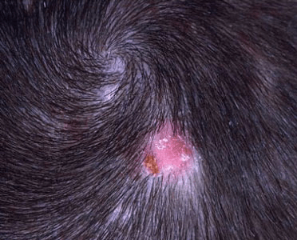

What is Tinea Capitis?
Ringworm of the scalp is not really a worm, but a fungal infection. It gets the name
ringworm because the fungus makes circular marks on the skin, often with flat centers
and raised borders. Also called Tinea capitis, this infection affects your scalp and
hair shafts, causing small patches of itchy, scaly skin.
Ringworm is a highly contagious infection that’s usually spread through person-to-person
contact or by sharing combs, towels, hats, or pillows. Ringworm is most common in children,
but can infect a person of any age.
Fungi called dermatophytes cause ringworm of the scalp. Fungi are organisms that thrive
on dead tissue, such as fingernails, hair, and the outer layers of your skin. Dermatophytes
prefer warmth and moisture, so they thrive on sweaty skin. Overcrowding and poor hygiene
increase the spread of ringworm.
Ringworm spreads easily, especially among children. You can get ringworm from touching the
skin of an infected person. If you use combs, bedding, or other objects that have been used
by an infected person, you’re also at risk.
House pets, such as cats and dogs, can spread ringworm, too. Farm animals like goats, cows,
horses, and pigs can also be carriers. However, these animals might not show any signs of infection.

The most common symptom of ringworm is itchy patches on the scalp. Sections of hair
may break off near the scalp, leaving scaly, red areas or bald spots. You may see black
dots where the hair has broken off. Left untreated, these areas can gradually grow and spread.
Other symptoms include:
- brittle hair
- painful scalp
- swollen lymph nodes
- low-grade fever
In more severe cases, you may develop crusty swellings called kerion that drain pus.
These can lead to permanent bald spots and scarring.
A visual exam is often enough for a doctor to diagnose ringworm of the scalp. Your
doctor may use a special light called a Wood’s lamp to illuminate your scalp and
determine signs of infection.
Your doctor may also take a skin or hair sample to confirm the diagnosis. The sample is
then sent to a lab to determine the presence of fungi. This involves looking at your
hair or a scraping from a scaly patch of scalp under a microscope. This process may
take up to three weeks.
Tinea capitis is contagious. The infection is spread through close contact with an
infected person, or by sharing combs, hairbrushes, hats, clothing, towels, beds and
other furniture with someone who is infected. It's also possible to catch ringworm
from infected animals such as dogs, cats, horses or farm animals.The fungus can live
for long periods of time in the environment and therefore infection can occur many
months later.
Yes. It can be cured if treated adequately as it is an infection. However, in
order to prevent re-infection, other family members and close contacts may need
to be checked to make sure they are not carrying the infection.
Tinea capitis needs to be treated with oral antifungal medication (which can only be
obtained on prescription) AND a medicated antifungal shampoo (purchased over the
counter from a pharmacy) to reduce spread of the fungus to other people.
It may be reasonable to start oral antifungal treatment immediately if your doctor has
a strong suspicion that this is tinea capitis. However, the doctor may wish to wait
for the test results to know the exact type of fungus causing the infection. This
enables the correct antifungal medication to be given.
If you are started on oral treatment immediately and the test results then show this
initial medication is not the most appropriate for the type of fungus you have, then
your treatment can be changed.
1.The oral antifungal treatments used include:
- Griseofulvin. This is the only licensed oral antifungal for children. A 6 to
8 week course is needed. The tablets can be crushed, and mixed with a little water,
if your children are unable to swallow them whole.
- Terbinafine. This is not licensed in children. This is because the manufacturer
of this medication has not applied for a license for it to be used in children and has not
conducted clinical trials to check its safety and effectiveness in children. It is licensed
in adults. It is very effective and so is also very commonly used “off license” in children
It is usually the first choice of treatment as it is accepted as the best treatment.
A 2 to 4-week course is needed.
- Other antifungal treatments used include itraconazole and fluconazole
Other possible side effects of griseofulvin include:
- sun sensitivity
- vomiting
- fatigue
- faintness
- dizziness
- allergic reactions in people who are also allergic to penicillin
- headache
- rash
- hives
Other possible side effects of terbinafine hydrochloride include:
- stomach pain
- itching
- rash
- hives
- loss of taste or change in taste
- allergic reaction
- headache
- fever
- liver problems, in rare cases
2.Medicated shampoo
Your doctor may prescribe a medicated shampoo to remove fungus and prevent the
spread of infection. The shampoo contains the active antifungal ingredient ketoconazole
or selenium sulfide. Medicated shampoo helps prevent the fungus from spreading, but it
doesn’t kill ringworm. You must combine this type of treatment with an oral medication.
Your doctor may tell you to use this shampoo a couple times per week for a month. Leave
the shampoo on for five minutes, then rinse.
Ringworm heals very slowly. It can take more than a month to see any improvement.
Be patient and continue taking all medication as directed.
Your doctor may want to check you or your child in 4 to 6 weeks to make sure the infection
is clearing up. It can be difficult to get rid of ringworm, and it’s possible to get the
infection more than once. However, recurrences often stop at puberty. Long-term effects
include possible bald patches or scarring.
Your child can usually return to school once they start treatment for ringworm, but you should
ask your doctor when it’s safe for them to return.
Pets and other family members should be examined and treated if necessary. This will help prevent
reinfection. Do not share towels, combs, hats, or other personal items with other family members.
You can sterilize combs and brushes that belong to the infected person by soaking them in bleach water.
Follow the directions on the bleach container for the proper dilution ratio.
The dermatophytes that cause ringworm are common and contagious. This makes prevention difficult.
Because children are especially susceptible, tell your children about the risks of sharing
hairbrushes and other personal items. Regular shampooing, hand washing, and other normal hygiene
routines can help prevent the spread of infection. Be sure to teach your children proper hygiene,
and follow these practices yourself.
It can be hard to tell if an animal has ringworm, but a common sign of infection is bald patches.
Avoid petting any animals that have patches of skin showing through their fur. Maintain regular
checkups for all pets and ask your veterinarian to check for ringworm.